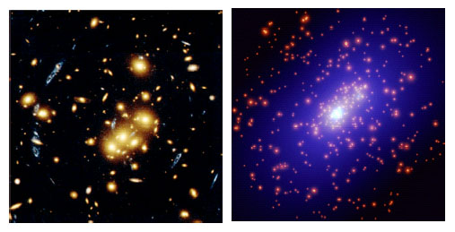
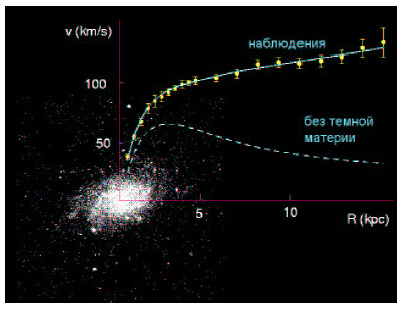
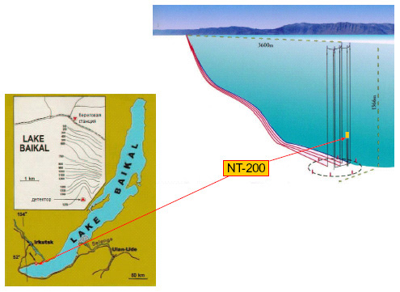
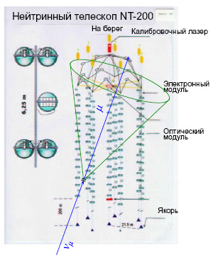

| 5. Темная материя |
|
Темная материя сродни обычному веществу в том смысле, что она способна собираться в сгустки
(размером, скажем, с галактику или скопление галактик) и участвует в гравитационных
взаимодействиях так же, как обычное вещество. Скорее всего, она состоит из новых, не открытых
еще в земных условиях частиц.
 Рис. 6. Гравитационное линзирование Помимо космологических данных, в пользу существования темной материи служат измерения гравитационного поля в скоплениях галактик и в галактиках. Имеется несколько способов измерения гравитационного поля в скоплениях галактик, один из которых — гравитационное линзирование, проиллюстрированное на рис. 6. Гравитационное поле скопления искривляет лучи света, испущенные галактикой, находящейся за скоплением, т. е. гравитационное поле действует как линза. При этом иногда появляются несколько образов этой удаленной галактики; на левой половине рис. 6 они имеют голубой цвет. Искривление света зависит от распределения массы в скоплении, независимо от того, какие частицы эту массу создают. Восстановленное таким образом распределение массы показано на правой половине рис. 6 голубым цветом; видно, что оно сильно отличается от распределения светящегося вещества. Измеренные подобным образом массы скоплений галактик согласуются с тем, что темная материя вкладывает около 25% в полную плотность энергии во Вселенной. Напомним, что это же число получается из сравнения теории образования структур (галактик, скоплений) с наблюдениями.  Рис. 7 Темная материя имеется и в галактиках. Это опять-таки следует из измерений гравитационного поля, теперь уже в галактиках и их окрестностях. Чем сильнее гравитационное поле, тем быстрее вращаются вокруг галактики звезды и облака газа, так что измерения скоростей вращения в зависимости от расстояния до центра галактики позволяют восстановить распределение массы в ней. Это проиллюстрировано на рис. 7: по мере удаления от центра галактики скорости обращения не уменьшаются, что говорит о том, что в галактике, в том числе вдалеке от её светящейся части, имеется несветящаяся, темная материя. В нашей Галактике в окрестности Солнца масса темной материи примерно равна массе обычного вещества. Что представляют из себя частицы темной материи? Ясно, что эти частицы не должны распадаться на другие, более легкие частицы, иначе бы они распались за время существования Вселенной. Сам этот факт свидетельствует о том, что в природе действует новый, не открытый пока закон сохранения, запрещающий этим частицам распадаться. Аналогия здесь с законом сохранения электрического заряда: электрон — это легчайшая частица с электрическим зарядом, и именно поэтому он не распадается на более легкие частицы (например, нейтрино и фотоны). Далее, частицы темной материи чрезвычайно слабо взаимодействуют с нашим веществом, иначе они были бы уже обнаружены в земных экспериментах. Дальше начинается область гипотез. Наиболее правдоподобной (но далеко не единственной!) представляется гипотеза о том, что частицы темной материи в 100–1000 раз тяжелее протона, и что их взаимодействие с обычным веществом по интенсивности сравнимо с взаимодействием нейтрино. Именно в рамках этой гипотезы современная плотность темной материи находит простое объяснение: частицы темной материи интенсивно рождались и аннигилировали в очень ранней Вселенной при сверхвысоких температурах (порядка 1015 градусов), и часть их дожила до наших дней. При указанных параметрах этих частиц их современное количество во Вселенной получается как раз такое, какое нужно. |
| Можно ли ожидать открытия частиц темной материи в недалеком будущем в земных условиях?
Поскольку мы сегодня не знаем природу этих частиц, ответить на этот вопрос вполне однозначно
нельзя. Тем не менее, перспектива представляется весьма оптимистической.
Имеется несколько путей поиска частиц темной материи. Один из них связан с экспериментами на будущих ускорителях высокой энергии — коллайдерах. Если частицы темной материи действительно тяжелее протона в 100–1000 раз, то они будут рождаться в столкновениях обычных частиц, разогнанных на коллайдерах до высоких энергий (энергий, достигнутых на существующих коллайдерах, для этого не хватает). Ближайшие перспективы здесь связаны со строящимся в международном центре ЦЕРН под Женевой Большим адронным коллайдером (LHC), на котором будут получены встречные пучки протонов с энергией 7x7 Тераэлектронвольт. Нужно сказать, что согласно популярным сегодня гипотезам, частицы темной материи — это лишь один представитель нового семейства элементарных частиц, так что наряду с открытием частиц темной материи можно надеяться на обнаружение на ускорителях целого класса новых частиц и новых взаимодействий. Космология подсказывает, что известными сегодня «кирпичиками» мир элементарных частиц далеко не исчерпывается! Другой путь состоит в регистрации частиц темной материи, которые летают вокруг нас. Их отнюдь не мало: при массе, равной 1000 масс протона, этих частиц здесь и сейчас должно быть 1000 штук в кубическом метре. Проблема в том, что они крайне слабо взаимодействуют с обычными частицами, вещество для них прозрачно. Тем не менее, частицы темной материи изредка сталкиваются с атомными ядрами, и эти столкновения можно надеяться зарегистрировать. Поиск в этом направлении  Рис. 8 Наконец, еще один путь связан с регистрацией продуктов аннигиляции частиц темной материи между собой. Эти частицы должны скапливаться в центре Земли и в центре Солнца (вещество для них практически прозрачно, и они способны проваливаться внутрь Земли или Солнца). Там они аннигилируют друг с другом, и при этом образуются другие частицы, в том числе нейтрино. Эти нейтрино свободно проходят сквозь толщу Земли или Солнца, и могут быть зарегистрированы специальными установками — нейтринными телескопами. Один из таких нейтринных телескопов расположен в глубине озера Байкал (НТ-200, рис. 8), другой (AMANDA) — глубоко во льду на Южном полюсе.  Рис. 9 Как показано на рис. 9, нейтрино, приходящее, например, из центра Солнца, может с малой вероятностью испытать взаимодействие в воде, в результате чего образуется заряженная частица (мюон), свет от которой и регистрируется. Поскольку взаимодействие нейтрино с веществом очень слабое, вероятность такого события мала, и требуются детекторы очень большого объема. Сейчас на Южном полюсе началось сооружение детектора объемом 1 кубический километр. Имеются и другие подходы к поиску частиц темной материи, например, поиск продуктов их аннигиляции в центральной области нашей Галактики. Какой из всех этих путей первым приведет к успеху, покажет время, но в любом случае открытие этих новых частиц и изучение их свойств станет важнейшим научным достижением. Эти частицы расскажут нам о свойствах Вселенной через 10–9 с (одна миллиардная секунды!) после Большого Взрыва, когда температура Вселенной составляла 10*15 градусов, и частицы темной материи интенсивно взаимодействовали с космической плазмой. |